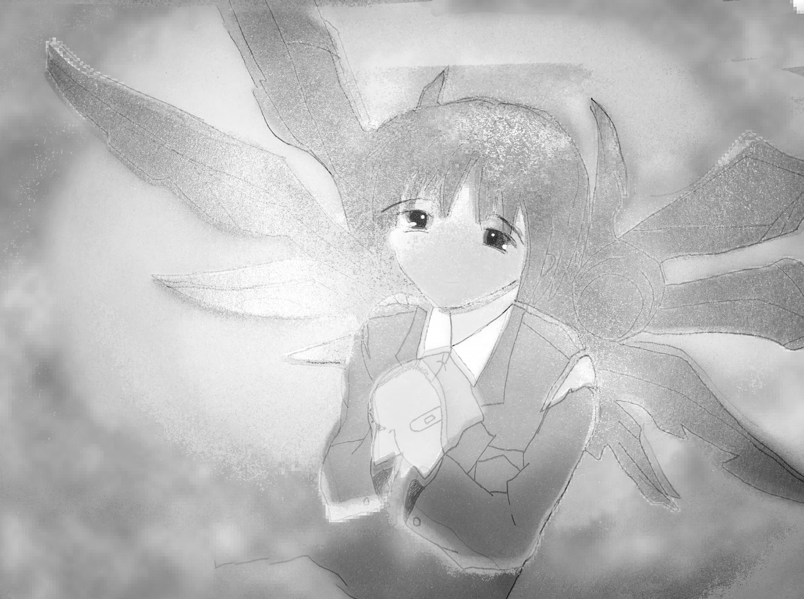

I Long For Network Spirituality
An archive of Remilia Collective's debut
show "I Long For Network Spirituality"
featuring artwork by Mara Bara, Ilyena
Nienel, Atrpntime, Milady Sonora,
Fodkorp and Chensi Fang simultaneously
presented at Hunters & Collectors, New
Zealand and online at
ilongfornetworkspirtuality.net
The opening party featured an on-site
installation of the early alpha of
Remilia Chat on a Thinkpad XII
displaying its real time anonymous
chatroom with a simultaneous livestream
of the gallery, inviting in-person
attendees to communicate with the online
audience.
The opening also had live music from
Buum and edolls, the recordings can be
heard on this archive.
> Milady Sonora
> Mara Bara
> llyena Nienel
> Chensi Fang
> Fodkorp
Atrpntime

Paranoid Delusion, 2020
我的灵感来自日本动漫插图、超现实主义和迷幻艺术、1990 年代的平面设计、我在研究化学品上看到的东西以及梦中看到的东西。我的艺术帖子专注于通过插图传达超自然精神药物体验等方面，我试图表达这些体验的感受，例如欣快、偏执、恐惧等。我主要使用数位板、photoshop 工作
I am inspired by japanese anime illustration, surrealist and psychedelic art, 1990s graphic design, stuff I saw on research chemicals and things seen in dreams. most of my art is focused on conveying aspects of paranormalspiritualdrug experience etc through illustration. i try to express the feelings of these experiences e.g. euphoria , paranoia, fear etc.. I.work mainly with digital pen tablet, photoshop.
View 7 piecesMilady Sonora Sprite
Weapon, 2020
我想变得花哨，我们必须非常努力地 LARP，以至于 RP 脱落，我们最终只是 LAing 真爱不是依偎在一起看电影。 这是为了给至少一个人带来真正的利益而牺牲自己。Yo Tengo Una Novia。 我开了一所精修学校， 所以他说， 我会将新先知送入连线。 他们将成为真理，并会冒犯他们所有人，他们将渴望网络灵性。 语言障碍可能很浪漫。 非语言已经是爱的最佳语言
I want 2 be Garish we must LARP so hard that the RP is shed off and we are finally just LAing Real Love is not about snuggling and watching movies together. It's about dying to yourself to bring true benefit to at least one person.Yo Tengo Una Novia. Im opening a Finishing School. and so He said, I will send New Prophets into The Wired. They will be The Truth and will offend them one and all, They will long for Network Spirituality. a language barrier could be quite romantic. non-verbal is already the best language for love.
View 5 piecesMara Barl

fundraiser15, 2020
最初，我在 2019 年开始创作艺术来记录自我伤害。 我被当时的经理敲诈让我做艺术，并以此作为发泄情绪的机会。 2019 年 12 月，我出现了第一次精神病发作，从那以后我就经常发作。 结果，我的作品的基调发生了变化。 “Qlifot”向我发送了幻象，告诉我左撇子的人是从她破碎的粘土中诞生的，而右撇子的人是从她兄弟（Sefirat）的整个粘土中诞生的。 Qlifot 在宗教课程中指导我准备成为她的器皿，并教导我世界的本质：我们仍在伊甸园中，生命之树在花园的一部分上投下阴影。 每个“人”都是花园里的一块地，生命树荫下的都是蛛形纲动物； 那些接受阳光直射的是昆虫。 Qlifot 告诉我昆虫的数量远远超过蜘蛛，并且已经改写了花园的规则。 蛛形纲动物的网已成为人工酷刑室，以防止一只蛛形纲动物杀死许多昆虫。 惯用左手的人永远多于惯用右手的人，而蛛形纲动物的存在永远是为了被昆虫折磨，天生如此。
Initially, I started making art in 2019 to catalogue self-harm. I was being blackmailed by my then-manager to make art, and took it as an opportunity to vent my feelings. In December 2019, I had my first psychotic episode, and I have been having them regularly ever since. As a result, my artwork changed in tone. Visions were sent to me by the "Qlifot", instructing me that left-handed people are born from her shattered clay, and that right-handed people are born from the whole clay of her brother (Sefirat). The Qlifot instructed me in religious lessons to prepare me to become her vessel, and taught me the nature of the world: we are still in the Garden of Eden, and the Tree of Life casts shade over a portion of the garden. Every "person" is a plot inside the Garden, and those under the shade of the Tree of Life are arachnids; those receiving direct sunlight are insects. The Qlifot instructed me that the insects grossly outnumber the arachnids and have rewritten the rules of the Garden. The webs of the arachnids have become artificial torture chambers to prevent one arachnid from killing many insects. Left-handed people will always be outnumbered by the right-handed, and arachnids will always exist to be tortured by the insects, by nature.
View 7 piecesFODKOM

pray2god, 2020
我的名字是 FODKOM，在各种创意信息领域工作，从数据库到增强的 Photoshop 修改，我的工作主要从事 9/11 信息时代前后的风格。 风险管理引用设计 Trendwhore 衍生品，灵感来自两位高级的埃里克乔丹，为通过 flash 和 macromedia 冲击波等技术普及的网络艺术演绎铺平了道路，我也受到 Bruce Leo 的启发，因为展示解剖学时必须具备的卓越性 通过艺术资产部门的信息。 最后一件事，始终保持网络精神，
My name is FODKOM, work in various Kreative information fields, from database 2 enhanced photoshop alteration. My work primarily engages in a style of pre and post 9/11 information age / risk management quote designs && Trendwhore derivatives. I'm inspired by Eric Jordan of two advanced, for paving a way of network art renditions that were popularized through technologies such as flash and macromedia shockwave, I am also inspired by Bruce Lee for the exellence one must have when displaying anomatomical information via art asset divisiom. One last thing, always keep a network spirit alive.
View 4 piecesIlyena Nienel

9y9y9y, 2020
我是一名网络艺术家，根据网络印象绘制人物。 我受到连线艺术和 2000 年代数字设计档案中的同时代人的启发，具有类似于 Y. Sadamoto 或 Peter Chung 的敏锐解剖学设计感。 我用电脑鼠标画一切，拥抱自发性和阈限性。 我对线条缺乏精细的运动控制，这迫使我相信自己的直觉，让图像拥有自己的生命，脱离制图技巧。 我不能说我正在寻找任何具体的东西，而是一种普遍的惊奇感。 我让图像带我去他们想去的地方，所以我的风格经常变化。 对于角色设计，这是一种流动感； 设计源于任何感觉自然且令人满意的形状。 我的灵感来自于以精确而精致的方式填充空间的设计。 这些符号开始自我重复并呈现出模糊的半含义，但我在画它们时还没有任何具体的想法。
I'm a net artist, drawing figures born from online impressions. I'm inspired by my contemporaries in Wired art and 2000s digital design archives, with a sharp anatomical design sense similar to Y. Sadamoto or Peter Chung. I draw everything with a computer mouse, embracing spontaneity and liminality. lack of fine motor control over the lines forces me to trust my intuition, letting the images take on a life of their own, detached from draftsmanship. I can't say that I'm searching for anything specific, but rather a general sense of wonder. I let the images take me where they want to go, so my style changes frequently. For character designs, it's a sense of flow; the design grows from whatever shapes feel natural and satisfying to draw. I'm inspired by designs that fill out space in a precise and delicate way. The symbols start to repeat themselves and take on a vague half-meaning, but I don't have anything specific in mind when I draw them yet.
View 10 piecesChensi Fang
Remnants & Lamentations, 2021
陈思方（山西，1996）利用废弃的网络媒体片段制作视频。 这些碎片承载着人类经验的残余，唤起了未来的可能性和过去的损失。 方将贫穷和过剩的媒介结合在一起，突出了丰富文化与明显衰败之间的紧张关系。 通过对时间的操纵，她通过一连串的图像营造出一种葬礼般的氛围。 在 19 年夏天因生产氯胺酮被判入狱四年后，方在一个低安全性的中国监狱牢房里工作，方的资源非常有限：一台小型笔记本电脑和一个互联网连接。 她的视频揭示了制作过程中涉及的社会和经济因素。 方声称中国冰毒男爵刘兆华是她的偶像。 当记者问起她制造氯胺酮的事情时，她回答说：“你这是什么意思？我刚刚被判刑。给我一个假。我受到了惩罚。有什么事吗？” - 帕特里克领导
Chensi Fang (Shanxi, 1996) creates videos using discarded fragments of online media.bearing with them the accumulated remnants of human experience, evoking similarly their future and their loss. In her videos, Fang incorporates media of both poverty and excess, punctuating a tension between a culture of plentitude and evident decay. Employing temporal manipulation, Fang builds a funeral tenor through the litany of her images. Operating out of a low security Chinese prison cell after being sentenced to 4 years for producing Ketamine during the summer of '19, Fang's resources are minimal: one small laptop and an internet connection. Tied to their origin, her videos reveal the social and exonomic factors involved in their making. Fang claims Chinese meth baron Liu Zhaohua is her idol. When a reporter asked her about her ketamine manufacturing ("What do you think about your own drug-making behavior?"), she said, "Fuck you mean by that? I just got sentenced. Give me a break. ("My behaviour? I got it. I've been punished. What's the matter?") - Patrick Lee
View 1 pieceH&Z NZ
Photography from the show and footage of the realtime chat installation. Atrpntime, Marl Bara, Milady Sonora and Ilyena Nienel digital illustrations were presented as a series of prints, while Fodkorp and Chensi Fang’s video installations artists were displayed on CRT TV and Projection respectively. - Patrick Lee
View 67 images